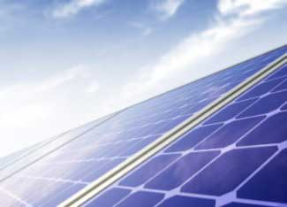

It's easy to get excited about solar and wind power. Choosing to produce your own electricity with rooftop solar panels or a backyard wind turbine is not only a great, sustainable option, but it can save you money, too.
That’s because tapping these renewable resources instead of fossil fuels reduces greenhouse gases, as well as mining wastes, and many other sources of air and water pollution. And renewable energy from the sun and wind is completely free. Once you purchase the initial system, you don’t have to spend money on the fuel to run it. Those savings add up quickly!
But how much solar and wind energy are available where you live? The fact is that some locations are much sunnier or windier than others. Without a steady supply of either wind or sunshine, generating your own electricity at home may not be a practical option. So how do you find out whether a home solar- or wind-electric system will work for you?
Fortunately, it's getting easier to learn about renewable energy thanks to handy online calculators and other resources.
A good place to start is the MyWatts Estimator. This is a free service provided by ChooseRenewables.com (a company that provides the estimates free, but does sell related products and services.) Just type in your location, and you immediately get a map and short summary of the solar and wind resources in your area.
This is a rough estimate, but it's a good starting place. For example, you can quickly see that your wind power resource is “good,” while your solar power resource is merely “average,” or vice versa.
At this point, you might want to look at some of the resources specific to solar or wind. The sites below have much more background information about these options, and they also can help you locate renewable energy professionals in your area who can give you a better estimate of the costs specific to your situation.
More Solar Resources:
More Wind Resources:
Through the resources above, many people will find that they have enough solar or wind to make a home electric system possible. But what if you don't? Or what if you decide that a solar or wind system doesn't make sense for you right now?
You don't have to give up on getting your electricity from renewable sources. Instead, consider buying green power from your utility. More and more utilities are offering consumers the option to buy their electricity from renewable sources, such as large wind farms and hydroelectric projects. You can learn more about green power here.
Also, there are many other ways to tap renewable energy, other than for electricity - for example for space and water heating. You can check out the dozens of articles on these topics at www.MotherEarthNews.com to learn more about solar hot water, passive solar design, and wood and geothermal heat. Enjoy exploring your options!
|
 ISTOCKPHOTO/FELIX MOCKEL If you live in a part of the world with plenty of sunshine, you might want to consider a solar-electric system. |
|
|